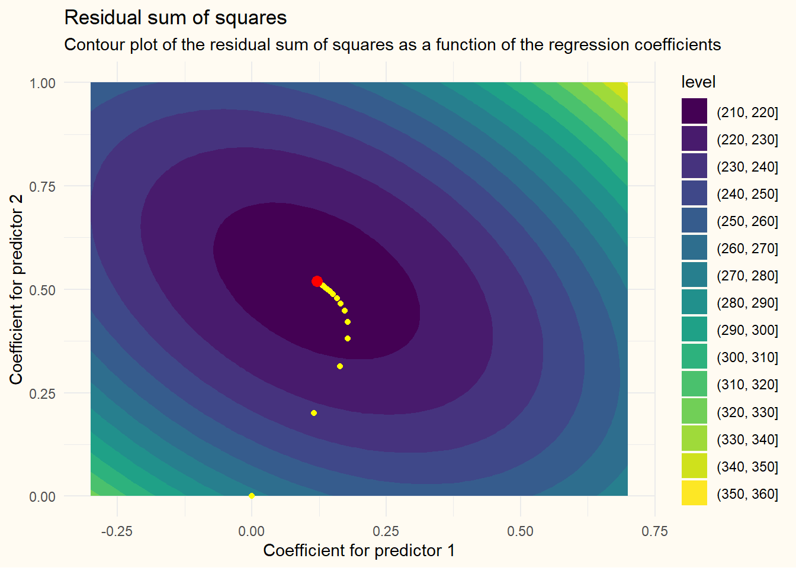

set.seed(42)
N <- 200 # sample size
P <- 2 # number of predictors
V <- 0.5 + 0.5 * diag(P) # covariance matrix of predictors
X <- mvtnorm::rmvnorm(N, sigma = V) # generate predictors
y <- X %*% c(0.2, 0.5) + rnorm(N) # generate response variableLinear regression is life. At age 17, Carl Friedrich Gauss, a German polymath, thought to himself: “You know what, we need to be able to determine the best linear fit through this cloud of points”, and the rest is history. The goal is to predict a target variable, \(y_i\), for observation \(i\) from a set of predictors, \(x_{i,1}, x_{i,2}, \ldots, x_{i,p}\). The model is given by \[ y_i = \beta_0 + \beta_1 x_{i,1} + \beta_2 x_{i,2} + \ldots + \beta_p x_{i,p} + \varepsilon_i, \] where \(\beta_0\) denotes the intercept, \(\beta_1, \ldots, \beta_p\) are the regression coefficients corresponding to predictors \(x_{i,1}, \dots, x_{i,p}\), and \(\varepsilon_i\) is the error term. The intercept \(\beta_0\) can be interpreted as the expected value of \(y\) for an observation that scores zero on all predictor variables, and \(\beta_1, \ldots, \beta_p\) represent the change in the expected value of \(y\) for a one-unit increase in the corresponding predictor variable, holding all other predictors constant. It is often convenient to cast the model in matrix form: \[ y = X \beta + \varepsilon, \] where \(y\) is the \(n \times 1\) response vector, \(X\) is the \(n \times (p + 1)\) design matrix containing the predictors, \(\beta\) is the \((p + 1) \times 1\) vector of coefficients, and \(\varepsilon\) is the \(n \times 1\) vector of errors. Note that the design matrix \(X\) contains a column of ones for the intercept, which we denote throughout as the “zeroth” column so that it corresponds to \(\beta_0\), notation-wise. Hence, for each observation, we multiply each predictor score by the corresponding regression coefficient and sum the terms.
NoteIntermezzo: Generating some example data
Before we continue, we generate some example data that we will use throughout. Our example data consists of two normally distributed predictor variables with means \(\mu_{X_1} = \mu_{X_2} = 0\), variances \(\sigma^2_{X_1} = \sigma^2_{X_2} = 1\) and correlation \(\rho_{X_1, X_2} = 0.5\). Moreover, the outcome variable is also distributed normally, with mean \(\mu_Y = 0.2 \cdot X_1 + 0.5 \cdot X_2\) and residual variance \(\sigma^2_\varepsilon = 1\). In matrix form, we have the following model: \[
X
\sim
\mathcal{N}
\begin{pmatrix}
\begin{bmatrix} 0 \\ 0 \end{bmatrix},
\begin{bmatrix}1 & .5 \\ .5 & 1 \end{bmatrix}
\end{pmatrix}, ~~~
y \sim \mathcal{N}(X \beta, 1), ~~~
\beta = \begin{bmatrix} 0.2 \\ 0.5 \end{bmatrix}.
\] From this model, we generate \(N = 200\) observations. In R, this can be done as follows.
Throughout, we use an intercept in the estimation models, which we append to our X matrix.
Xd <- cbind(1, X)The goal, of course, is to estimate the regression coefficients \(\beta\) such that we can predict the response variable \(y\) as good as it gets. You might want to do this by minimising the sum of squared errors: \[ \min_\beta \sum_{i=1}^n (y_i - \beta_0 - \beta_1 x_{i,1} - \ldots - \beta_p x_{i,p})^2 = (y - X \beta)^T (y - X \beta). \] The “best” estimate for this problem yields the smallest residuals (in a squared error sense). So, how do we choose the coefficients such that the residuals are as small as possible? One way would be to start with an initial guess for the regression coefficients and iteratively move in the direction where the errors decrease as fast as possible. If you look at the contour plot below, the residual sum of squares for some data \(X\) and \(y\) is displayed as a function of the two regression coefficients. At every location in the contour plot, the sum of squared errors slopes down in the direction of the minimum. So, if we knew how the sum of squares changes as a function of the regression coefficients, we could iteratively move our estimates of the regression coefficients in the direction where the residual sum of squares becomes smaller and smaller, until we end up at the minimum!
Show figure code
library(ggplot2)
library(dplyr)
bgrid <- expand.grid(
b1 = seq(-0.3, 0.7, length.out = 100),
b2 = seq(0, 1, length.out = 100)
)
opt <- coef(lm(y~Xd-1))
rss <- function(b, x, y, b0) {
yhat <- b0 + X %*% b
sum((y - yhat)^2)
}
rss <- mutate(bgrid, rss = apply(bgrid, 1, rss, x = X, y = y, b0 = opt[1]))
ggplot(rss, aes(b1, b2, z = rss)) +
geom_contour_filled() +
geom_point(aes(x = opt[2], y = opt[3]), color = "red", size = 3) +
labs(
title = "Residual sum of squares",
subtitle = "Contours of residual sum of squares as a
function of the regression coefficients",
x = "Coefficient for predictor 1",
y = "Coefficient for predictor 2"
) +
theme_minimal() +
theme(plot.background = element_rect(fill = "#fffbf2", colour = "transparent"))To know how the residual sum of squares changes as a function of the regression coefficient, we can make use of the derivatives of this function with respect to \(\beta\). Loosely speaking, the derivatives quantify how fast the sum of squares changes when we change each of the coefficients by a tiny amount. The collection of these rates of change, a vector called the gradient, tells us in what direction we need to move to get closer to the minimum. The gradient is commonly denoted by \(\nabla_\beta\) (the \(\nabla\) symbol is called nabla or del) and can be obtained by applying the chain rule for differentiation: \[ \begin{aligned} \nabla_\beta &= \begin{bmatrix} \frac{\partial}{\partial \beta_0} \left(\sum_{i=1}^n (y_i - \beta_0 x_{i,0} - \beta_1 x_{i,1} - \dots - \beta_px_{i,p})^2 \right)\\ \vdots \\ \frac{\partial}{\partial \beta_p} \left(\sum_{i=1}^n (y_i - \beta_0 x_{i,0} - \beta_1 x_{i,1} - \dots - \beta_px_{i,p})^2 \right) \end{bmatrix} \\ &= \begin{bmatrix} \left( \sum_{i=1}^n -2 x_{i,0}(y_i - \beta_0 x_{i,0} - \beta_1 x_{i,1} - \dots -\beta_p x_{i,p}) \right) \\ \vdots \\ \left( \sum_{i=1}^n -2 x_{i,p}(y_i - \beta_0 x_{i,0} - \beta_1 x_{i,1} - \dots -\beta_p x_{i,p}) \right) \\ \end{bmatrix}. \end{aligned} \] Each partial derivative tells us how the total error would change if we nudged one coefficient while keeping the others fixed. We can update each regression coefficient repeatedly by a tiny amount in the direction of the minimum, until we ultimately reach this minimum. This process is known as gradient descent. A short and applied illustration of gradient descent is included below, but since I don’t want to focus this post on gradient descent too much, I hid the algorithm behind an expandable block.
TipClick here to learn more about gradient descent!
Gradient descent attempts to find the optimal values of the regression coefficients iteratively. To do so, it starts at a given point, say, \(\beta_0^{(0)} = \beta_1^{(0)} = \beta_2^{(0)} = 0\). From here on, we can take a small step in the opposite direction of the gradient, as the gradient gives the direction of the fastest increase, while we want to decrease function values (i.e., the sum of squares) until we reach the minimum. So, in the first iteration, we move \(\alpha\) steps in the direction of the gradient, towards the optimal \(\beta_0\) value given the current values for \(\beta_1\) and \(\beta_2\), so that we have \[ \beta_0^{(1)} \leftarrow \beta_0^{(0)} + \alpha \left( \sum_{i=1}^n 2x_{i,0} (y_i - \beta_0^{(0)}x_{i,0} - \beta_1^{(0)} x_{i,1} - \beta_2^{(0)} x_{i,2}) \right). \] Note that the “minus” from the derivative cancels with the “minus” from moving in the opposite direction. Subsequently, we do the same for the other regression coefficients, such that \[ \begin{aligned} \beta_1^{(1)} &\leftarrow \beta_1^{(0)} + \alpha \left( \sum_{i=1}^n 2x_{i,1} (y_i - \beta_0^{(0)}x_{i,0} - \beta_1^{(0)} x_{i,1} - \beta_2^{(0)} x_{i,2}) \right), \\ \beta_2^{(1)} & \leftarrow \beta_2^{(0)} + \alpha \left( \sum_{i=1}^n 2x_{i,2} (y_i - \beta_0^{(0)}x_{i,0} - \beta_1^{(0)} x_{i,1} - \beta_2^{(0)} x_{i,2}) \right), \end{aligned} \] For all subsequent steps, we then have \[ \beta_j^{(k+1)} \leftarrow \beta_j^{(k)} + \alpha \left( \sum_{i=1}^n 2x_{i,j} (y_i - \beta_0^{(k)}x_{i,0} - \beta_1^{(k)} x_{i,1} - \beta_2^{(k)} x_{i,2}). \right), \] We can repeat this procedure until the regression coefficients stop changing, at which point the algorithm is said to have converged. A very naive implementation of this algorithm is implemented below. Note that many computations can be performed in more efficient ways. Nowadays, many resources on gradient descent exist, most of which I did not find particularly instructive, but the section on Gradient Descent in Dive Into Deep Learning combines the mathematics with simple examples and nice figures, and the paper by Sebastian Ruder (2017) covers many extensions.
deriv_beta_j <- function(X, y, beta, j) {
-2 * sum(X[,j] * (y - X %*% beta))
}
alpha <- 0.001 # set the set-size
tol <- 1e-8 # tolerance for convergence
iter <- 1 # initialize counter
maxit <- 1000 # set maximum number of iterations
conv <- FALSE # state that we currently haven't converged
beta_matrix <- matrix(0, maxit, P+1) # initialize empty matrix for coefficients
while(!conv) {
iter <- iter + 1
for (j in 1:ncol(Xd)) {
beta_matrix[iter, j] <- beta_matrix[iter-1, j] -
alpha * deriv_beta_j(Xd, y, beta_matrix[iter-1, ], j)
}
if (sum(abs(beta_matrix[iter, ] - beta_matrix[iter - 1, ])) < tol) {
conv <- TRUE
}
if (iter == maxit) {
cat("The algorithm didn't converge")
break
}
}The following figure shows how the algorithm moves from starting values to the optimum, and we can confirm that the solution is almost identical to the solution provided by simply running lm() in R.
Show figure code
beta_matrix <- beta_matrix[1:iter, ]
ggplot(rss, aes(b1, b2, z = rss)) +
geom_contour_filled() +
geom_point(data = NULL, aes(x = c(beta_matrix[,2], rep(NA, 10000 - nrow(beta_matrix))),
y = c(beta_matrix[,3], rep(NA, 10000 - nrow(beta_matrix)))),
col = "yellow") +
geom_point(aes(x = opt[2], y = opt[3]), color = "red", size = 3) +
labs(
title = "Residual sum of squares",
subtitle = "Contour plot of the residual sum of squares as a function of the regression coefficients",
x = "Coefficient for predictor 1",
y = "Coefficient for predictor 2"
) +
theme_minimal() +
theme(plot.background = element_rect(fill = "#fffbf2", colour = "transparent"))
This remarkably simple algorithm performs quite well in many situations, and can, with some modifications, even be the most efficient way to calculate linear regression coefficients (when the dataset is huge, in terms of sample size and number of variables).
We can also use the gradient directly, by noting that in the optimum, the derivatives are zero, because moving further in the direction of the minimum is not possible, and thus there is “zero” change in this direction. Setting each derivative equal to zero and solving the equations for the regression coefficients yields the optimal solution in one go. This is something that can be done with linear algebra!
From derivatives to estimates
In the previous section, we saw that the gradient is given by \[ \nabla_\beta = \begin{bmatrix} \left( \sum_{i=1}^n -2 x_{i,0}(y_i - \beta_0 x_{i,0} - \beta_1 x_{i,1} - \dots -\beta_p x_{i,p}) \right) \\ \vdots \\ \left( \sum_{i=1}^n -2 x_{i,p}(y_i - \beta_0 x_{i,0} - \beta_1 x_{i,1} - \dots -\beta_p x_{i,p}) \right) \\ \end{bmatrix}. \] In each row of this vector, the product term consistently multiplies the columns of our predictor matrix, \(X\), with the residuals \(y - X\beta\). The same operations can be encoded in terms of matrix, \[ \nabla_\beta = -2 X^T(y - X\beta), \] which multiplies each column of \(X\) with the vector of residuals and sums the elements. We can get rid of the parentheses, such that we obtain \[ \begin{aligned} \nabla_\beta &= -2 X^T(y - X\beta) \\ &= -2X^Ty + 2X^TX\beta \end{aligned} \] Setting the derivative equal to zero and dividing both terms by \(2\) yields the set of equations \[ X^T X \beta = X^T y, \] which are commonly called the normal equations. We can solve these equations for \(\beta\) by pre-multiplying both sides with the inverse of \(X^T X\), and noting that \((X^T X)^{-1}(X^T X) = I\), the identity matrix. We then obtain \[ \begin{aligned} (X^T X)^{-1}(X^T X)\beta &= (X^T X)^{-1} X^T y \\ \beta &= (X^T X)^{-1} X^T y. \end{aligned} \] Hooray! With just a few steps, we get from the gradient to the solution of the regression problem.
Solving the normal equations in R
Coding the solution to our regression problem takes just a couple of operations. Recall that our design matrix Xd includes a column of ones for the intercept. The solution is given by
solve(t(Xd) %*% Xd) %*% t(Xd) %*% y [,1]
[1,] -0.05924251
[2,] 0.12069667
[3,] 0.52018686We can verify whether our obtained solution equals the solution provided by the regression function in R by calling lm().
lm_fit <- lm(y ~ X)
coef(lm_fit)(Intercept) X1 X2
-0.05924251 0.12069667 0.52018686 Not very surprisingly, the coefficients are equal. However, I can directly disclose that our solution is correct, but can be improved in various ways. First, inverting a matrix is expensive, and calculating the cross products as t(Xd) %*% Xd and t(Xd) %*% y is also not very efficient. We can already achieve a speed-up by using the cross-product function crossprod(), which is typically more efficient than separately transposing and multiplying matrices. Moreover, we do not need to invert the matrix \(X^T X\), but we can solve the normal equations directly, which also yields a speed-up (Table 1 provides some evidence for these claims). In terms of code, this is achieved as follows, which again yields the same coefficients.
solve(crossprod(Xd), crossprod(Xd, y)) [,1]
[1,] -0.05924251
[2,] 0.12069667
[3,] 0.52018686This is almost as efficient as it gets, computationally, because internally, R uses some clever tricks to solve this system of equations as efficiently as possible. However, there are other ways to obtaining the regression coefficients that have different advantages. In the next sections, we look into some of the most popular linear algebra tricks to compute the regression coefficients.
Solving the normal equations through a QR decomposition
An alternative way to solve the normal equations is by first performing a transformation of the design matrix \(X\) that simplifies the subsequent calculations. To this end, we can decompose the design matrix \(X\) into an \(n \times p+1\) orthogonal unitary matrix \(Q\) and an upper triangular matrix \(R\) using a QR decomposition. This sounds really complicated, but it merely means that the matrix \(Q\) contains \(p+1\) uncorrelated (i.e., orthogonal) columns of length one (i.e., the sum of the squared elements of every column in \(Q\) equals \(\sum_{i=1}^n Q_{(i,j)}^2 = ||Q_{.,j}||_2 = Q_{.,j}^TQ_{.,j} = 1\)). The matrix \(R\) is then chosen such that when multiplied with \(Q\), we obtain \(X\) again. For those unfamiliar with QR decompositions, a simple algorithm for computing the QR decomposition is included below.
TipA simple algorithm for computing the QR decomposition (Gram-Schmidt)
Note that the algorithm below is included solely for explanatory purposes for those unaware of the QR decomposition. It is poor code from a computational point of view.
qr_func <- function(X) {
# store dimensions of input matrix
dim <- dim(X)
# initialize empty Q matrix
Q <- matrix(0, dim[1], dim[2])
# note the convenient feature of Q that the zero columns don't do anything
# initialize the first column of Q as a scaled version of the first column of X
Q[,1] <- X[,1] / c(sqrt(crossprod(X[,1])))
for (j in 2:dim[2]) {
# calculate coefficients that produce X[,j] orthogonal to existing Q columns
b <- c(crossprod(X[,j], Q[,1:(j-1)]) / apply(Q[,1:(j-1), drop = FALSE], 2, crossprod))
# note that these coefficients are merely the unscaled covariances of X[,j]
# with the existing columns of Q, and by multiplying existing Q with these
# coefficients and subtracting these values from X, the new Q-column is
# uncorrelated to the existing Q-columns.
Q[,j] <- X[,j] - Q[,1:(j-1), drop = FALSE] %*% b
# scale to unit length
Q[,j] <- Q[,j] / sqrt(sum(Q[,j]^2))
}
# calculate R by making sure that Q^T X = R, and thus X = QR
# we use here that Q is orthonormal, and thus Q^TQ = I
R <- t(Q) %*% X
list(Q = Q, R = R)
}
K <- matrix(sample(20), 5)
(qr_own <- qr_func(K))$Q
[,1] [,2] [,3] [,4]
[1,] 0.06696495 0.4354260 -0.11828785 0.3418044
[2,] 0.20089486 0.7514209 -0.10300605 0.2878141
[3,] 0.66964953 0.1928315 0.01205777 -0.7037544
[4,] 0.53571962 -0.2341348 0.67174297 0.4547543
[5,] 0.46875467 -0.3921322 -0.72388793 0.3134662
$R
[,1] [,2] [,3] [,4]
[1,] 2.986637e+01 1.720999e+01 2.604937e+01 20.960030
[2,] 1.776357e-15 1.802266e+01 7.528889e+00 8.005370
[3,] -7.105427e-15 -5.995204e-15 8.645595e+00 1.010103
[4,] -4.440892e-15 -9.547918e-15 2.442491e-15 6.524636Note that the matrix \(R\) is unique only up to multiplication by a diagonal matrix consisting of positive and negative ones. That is, if we multiply a column of \(Q\) by \(-1\) and perform the same operation to the row of \(R\), we obtain the same \(X\) upon multiplication.
qr_R <- qr(K)
Q <- qr.Q(qr_R)
R <- qr.R(qr_R)
sign_R <- sign(diag(R))
all.equal(Q, qr_own$Q %*% diag(sign_R))[1] TRUEall.equal(R, diag(sign_R) %*% qr_own$R)[1] TRUEUsing some convenient features of orthonormal and upper triangular matrices, it is actually quite easy to perform linear regression right now. Using the fact that \(X = QR\), we can rewrite our linear regression problem as \[ \begin{aligned} X^TX \beta &= X^Ty \\ (QR)^T(QR) \beta &= (QR)^T y \\ R^TQ^TQR \beta &= R^TQ^T y. \\ \end{aligned} \] So far, it seems like we haven’t achieved much, other than rewriting some expression into a longer and not necessarily simpler expression. However, remember that \(Q\) is orthonormal, and thus that \(Q^TQ = I\). So, now we have \[ R^TR \beta = R^TQ^Ty, \] which is almost as simple as the expression we already had. We can again pre-multiply both sides with the inverse of \(R^T\), which results in two new identity matrices that we can ignore. We now obtain the final expression \[ R\beta = Q^T y, \] and since \(R\) is upper triangular, we can very efficiently solve this set of equations using back-substitution. In our case, we have only two predictors and an intercept, so \(R\) is \(3 \times 3\) with zeros below the diagonal, \(\beta\) is a vector with three elements, and \(Q^Ty\) is a vector with three elements. Hence, we have \[ \begin{aligned} R_{1,1}\beta_1 + R_{1,2}\beta_2 + R_{1,3}\beta_3 &= (Q^T y)_1 \\ R_{2,2}\beta_2 + R_{2,3}\beta_3 &= (Q^T y)_2 \\ R_{3,3}\beta_3 &= (Q^Ty)_3. \end{aligned} \] Starting from the bottom, \(\beta_3\) is given by \((Q^Ty)_3 / R_{3,3}\). The value for \(\beta_2\) is easily obtained once we have \(\beta_3\)! The only thing we have to do is rewriting the equation above as \(\beta_2 = ((Q^T y)_{2} - R_{2,3} \beta_3)/R_{2,2}\). Doing the same thing for the intercept yields \(\beta_1 = ((Q^T y)_{1} - R_{1,2}\beta_2 - R_{1,3} \beta_3)/R_{1,1}\). Yoo, this stuff is actually simpler than I thought!
QR <- qr(Xd)
QTy <- t(qr.Q(QR)) %*% y
R <- qr.R(QR)
b3 <- QTy[3] / R[3,3]
b2 <- (QTy[2] - R[2,3] * b3) / R[2,2]
b1 <- (QTy[1] - R[1,2] * b2 - R[1,3] * b3) / R[1,1]
c(b1, b2, b3)[1] -0.05924251 0.12069667 0.52018686
TipWe can do the same thing much more efficient, just watch!
qr.solve(Xd, y) [,1]
[1,] -0.05924251
[2,] 0.12069667
[3,] 0.52018686Internally, solve(crossprod(X), crossprod(X, y)) uses a similar trick (by decomposing \(X^TX = LU\)), so we don’t necessarily expect a speed-up here.
Using a \(QR\) decomposition to solve the least-squares equations is computationally more stable (i.e., results in smaller approximation errors) than solving the normal equations directly. If \(X^TX\) is far from singular, this does not matter much, but if some variables are highly correlated, the resulting approximation errors can be quite large. However, the computation is somewhat less efficient than solving the normal equations directly. We will come back to computational efficiency below.
Same trick, different (singular value) decomposition
If you get the gist of the previous method, the singular value decomposition will feel fairly easy. We again start from the setting that \(X^TX\beta = X^Ty\), but now we replace \(X\) by its singular value decomposition \(U\Sigma V^T\), where both \(U\) and \(V\) are orthonormal matrices and \(\Sigma\) is a diagonal matrix containing the singular values of \(X\). We now obtain the following expression \[ V\Sigma^T U^T U \Sigma V^T \beta = V \Sigma^T U^T y. \] We know from the previous section that the product of orthonormal matrices \(U^T U\) can be ignored, and since \(\Sigma\) is diagonal, \(\Sigma^T = \Sigma\). So we can rewrite the expression as \[ \begin{aligned} V\Sigma^T U^T U \Sigma V^T \beta &= V \Sigma^T U^T y \\ \Rightarrow V\Sigma\Sigma V^T \beta &= V \Sigma U^T y \\ \Rightarrow \Sigma\Sigma V^T \beta &= \Sigma U^T y\\ \Rightarrow V^T \beta &= \Sigma^{-1} U^Ty \\ \Rightarrow \beta &= V \Sigma^{-1} U^T y, \end{aligned} \] where we performed the following operations:
- On line 2: remove \(U^TU\), as it’s just cluttered notation for an identity matrix.
- On line 3: premultiply both sides by \(V^T\) and note that \(V^TV\) is also an identity matrix.
- On line 4: premultiply both sides by \(\Sigma^{-1}\Sigma^{-1}\).
- On line 5: premultiply both sides by \(V\) (and use orthogonality of \(V\)).
In R, we thus have the following:
USV <- svd(Xd)
USV$v %*% diag(1/USV$d) %*% t(USV$u) %*% y [,1]
[1,] -0.05924251
[2,] 0.12069667
[3,] 0.52018686These calculations can be further simplified because we do not need to construct the diagonal matrix \(\Sigma^{-1}\). We can carry out these calculations element-wise on the \(U^Ty\) vector, like so:
USV$v %*% (crossprod(USV$u, y)/USV$d) [,1]
[1,] -0.05924251
[2,] 0.12069667
[3,] 0.52018686The singular value decomposition is again slightly more expensive to compute than the \(QR\) decomposition, and is also more stable computationally than solving the normal equations directly. Moreover, the singular value decomposition can be used even if \(X^TX\) is rank-deficient, i.e., if some columns of \(X\) are linearly dependent. In such instances, we use \[ \Sigma^+ = \begin{cases} \frac{1}{\sigma_i} & \text{if } \sigma_i>0 \\ 0 & \text{otherwise} \end{cases}, \] which is the pseudo-inverse of the matrix \(\Sigma\) that can be used to calculate the pseudo-inverse of a rank-deficient matrix \(X^TX\). This formulation can even be used if we have more variables than cases, which is sometimes called minimum \(\ell_2\) norm regression (see, for example, Tibshirani, 2024 and Kobak et al., 2020).
One final decomposition (Cholesky)
We circle back to our initial solution \[ X^TX\beta = X^Ty, \] and introduce a final decomposition to solve the set of equations. By noting that \(X^TX\) is symmetric and positive-definite, we can decompose it as \[ X^TX = LL^T, \] where \(L\) is a lower-triangular matrix. So, instead of decomposing the design matrix (i.e., the matrix with observed predictors), we decompose the (unscaled) covariance matrix \(X^TX\). Using this formulation, we can write \[ LL^T\beta = X^Ty. \] Now, because \(L\) is lower-triangular, and \(L^T\) is upper-triangular, we can solve the set of equations efficiently as follows. First, we can solve \[ L g = X^Ty \] for a newly introduced vector \(g\), which is easy because \(L\) is lower-triangular. To do this, we use forward substitution, which implies nothing more than the following. Starting from the first row, we have \(L_{11}g_1 = (X^Ty)_1\). For the second row, we have \(L_{21} g_1 + L_{22}g_2 = (X^Ty)_2\) for which we can plug in the previously calculated \(g_1\). We repeat the process until we solved for all elements of \(g\). Subsequently, we can solve \(L^T\beta = g\), which is also easy because we can make use of the fact that \(L^T\) is upper triangular, which means we can use backward substitution. Here, starting from the last row, we have \((L^T)_{pp}\beta_p = g_p\), \((L^T)_{p-1}\beta_{p-1} = g_{p-1}\), and so on. To see why this works, we only have to rewrite the equation \[ \begin{aligned} LL^T\beta &= X^Ty \\ \Rightarrow ~~~~ LL^T\beta &= Lg ~~~~~~ \text{rewrite } X^Ty \text{ as } Lg \\ \Rightarrow ~~~~~~~ L^T\beta &= g ~~~~~~~~ \text{premultiply with } L^{-1}. \end{aligned} \] This is one of the most efficient ways to calculate the regression coefficients, but can be numerically unstable when \(X\) is close to rank-deficient.
TipComputing the Cholesky decomposition
To compute the Cholesky decomposition, we need to find a lower-triangular matrix \(L\) such that, when multiplied with its transpose, it produces the original matrix \(X^TX\). Let’s break this down into a set of equations, where we write \(X^TX = A = LL^T\): \[ \begin{aligned} A &= LL^T \\ \begin{bmatrix} a_{11} & a_{12} & \cdots & a_{1p} \\ a_{21} & a_{22} & \cdots & a_{2p} \\ \vdots & \vdots & \ddots & \vdots \\ a_{p1} & a_{p2} & \cdots & a_{pp} \end{bmatrix} &= \begin{bmatrix} l_{11} & 0 & \cdots & 0 \\ l_{21} & l_{22} & \cdots & 0 \\ \vdots & \vdots & \ddots & \vdots \\ l_{p1} & l_{p2} & \cdots & l_{pp} \end{bmatrix} \begin{bmatrix} l_{11} & l_{21} & \cdots & l_{p1} \\ 0 & l_{22} & \cdots & l_{p2} \\ \vdots & \vdots & \ddots & \vdots \\ 0 & 0 & \cdots & l_{pp} \end{bmatrix}. \end{aligned} \] From here, it follows that, for the first row of \(A\), we have \[ \begin{aligned} a_{11} &= l_{11} \cdot l_{11} + 0 \cdot 0 + \cdots + 0 \cdot 0 = l_{11}^2 \\ a_{12} &= l_{11} \cdot l_{21} + 0 \cdot l_{22} + \cdots + 0 \cdot 0 = l_{11} \cdot l_{21} \\ \vdots ~~ &= ~~~~~~~~~~~~~~~~~~~~~~\vdots \\ a_{1p} &= l_{11} \cdot l_{p1} + 0 \cdot l_{p2} + \cdots + 0 \cdot l_{pp} = l_{11} \cdot l_{p1}. \end{aligned} \] Thus, \(l_{11} = \sqrt{a_{11}}\), \(l_{21} = a_{12}/l_{11}\), using \(l_{11}\) obtained in the previous step, and \(l_{p_1}=a_{1p}/l_{11}\), again using the previously obtained \(l_{11}\). Moving to the second row of \(A\), we have that \[ a_{21} = a_{12}, \] which we have obtained already. Continuing our journey, we get \[ \begin{aligned} a_{22} &= l_{21} \cdot l_{21} + l_{22} \cdot l_{22} + 0 + \cdots + 0 = l_{21}^2 + l_{22}^2 \\ \vdots ~~ &= ~~~~~~~~~~~~~~~~~~~~~~\vdots \\ a_{2p} &= l_{21} \cdot l_{p1} + l_{22} \cdot l_{p2} + 0 + \cdots + 0 = l_{21} \cdot l_{p1} + l_{22} \cdot l_{p2}, \end{aligned} \] which we can again solve sequentially, \[ \begin{aligned} l_{22} &= \sqrt{a_{22} - l_{21}} \\ \vdots &= ~~~~~~~~~~ \vdots \\ l_{p2} &= \left( a_{2p} - l_{21} \cdot l_{p1} \right)/l_{22}, \end{aligned} \] and noting that every required factor of \(L\) has been calculated previously.
Putting everything in a small algorithm, we obtain the following Cholesky-Crout algorithm (see Wikipedia:
cholesky <- function(XTX) {
dim <- dim(XTX)
L <- matrix(0, dim[1], dim[2])
L[1,1] <- sqrt(XTX[1,1])
for (i in 2:dim[1]) {
for (j in 1:(i-1)) {
L[i,j] <- (XTX[i,j] - sum(L[i,1:j]*L[j,1:j]))/L[j,j] #
}
L[i,i] <- sqrt(XTX[i,i] - sum(L[i,1:(i-1)]^2))
}
L
}
XTX <- crossprod(Xd)
L <- cholesky(XTX)
XTX [,1] [,2] [,3]
[1,] 200.0000000 -3.838651 -0.1295953
[2,] -3.8386514 170.992962 71.4164806
[3,] -0.1295953 71.416481 176.1875449L %*% t(L) [,1] [,2] [,3]
[1,] 200.0000000 -3.838651 -0.1295953
[2,] -3.8386514 170.992962 71.4164806
[3,] -0.1295953 71.416481 176.1875449Some of you might note that all this fuss is irrelevant, as we essentially already had the Cholesky decomposition of \(X^TX\). Remember that \(X^TX = R^TQ^TQR^T = R^TR\), so if we set \(L = R^T\) we are fairly close to the solution.
L [,1] [,2] [,3]
[1,] 14.142135624 0.000000 0.00000
[2,] -0.271433644 13.073610 0.00000
[3,] -0.009163773 5.462454 12.09748t(R) [,1] [,2] [,3]
[1,] -14.142135624 0.000000 0.00000
[2,] 0.271433644 -13.073610 0.00000
[3,] 0.009163773 -5.462454 12.09748Remember that \(R\) was unique only up to multiplication with a diagonal matrix consisting of ones and minus ones. If we impose the restriction that \(R\) only has positive diagonal elements, we get the following.
t(R) %*% diag(sign(diag(R))) [,1] [,2] [,3]
[1,] 14.142135624 0.000000 0.00000
[2,] -0.271433644 13.073610 0.00000
[3,] -0.009163773 5.462454 12.09748L [,1] [,2] [,3]
[1,] 14.142135624 0.000000 0.00000
[2,] -0.271433644 13.073610 0.00000
[3,] -0.009163773 5.462454 12.09748Which illustrates that we already had this solution. However, computing the \(QR\) decomposition first requires more calculations than necessary (i.e., is less efficient).
A note on computational complexity
So far, we have considered four methods for performing the calculations: solving the normal equations directly, using a Cholesky decomposition, and using a \(QR\) or \(SVD\) decomposition of the design matrix, and exploiting this structure to perform the calculations. Each of these methods requires a certain number of operations, leaving storage requirements aside. In it’s least optimized form, solving the normal equations directly requires approximately \(2np^2 + 2np + p^3\) operations: \(2np^2\) for computing \(X^TX\), \(2np\) for computing \(X^Ty\) and \(p^3\) for computing the inverse of \(X^TX\). However, we can improve efficiency by noting that for calculating \(X^TX\), we only need to perform half of the computations, because \(X^TX\) yields a symmetric matrix. Moreover, performing a Cholesky decomposition to solve the system yields an additional speed-up. Computing the Cholesky decomposition of \(X^TX\) requires \(p^3/3\) operations, and subsequently solving the system requires another \(2p^2\). Solving the normal equations by performing a \(QR\) decomposition first requires approximately \(2(n-p/3)p^2\) computations for performing the QR decomposition, \(2np\) computations for computing \(Q^T y\) and \(p^2\) computations for solving the system. Computing the coefficients using a singular value decomposition does not yield an exact number of operations, but takes approximately \(2(n + 11/2 p)p^2\) operations for computing the \(SVD\), and then some additional operations for performing the matrix multiplications (\(2np\) for calculating \(U^Ty\), \(p\) for multiplying with \(\Sigma^{-1}\) and \(2p^2\) for multiplying this vector with \(V\), if all done efficiently).
p <- P+1
n <- N
2*n*p^2 + 2*n*p + p^3 # directly[1] 4827n*p^2 + 2*n*p + p^3/3 + 2*p # optimized and with cholesky[1] 30152*(n - p/3)*p^2 + 2*n*p + p^2 # QR[1] 47912*(n + 11/2 * p)*p^2 + 3*p^2 + 2*n*p + p # SVD[1] 5127Benchmarking
Throughout, we displayed multiple ways of calculating the regression coefficients in R, and made some statements with respect to their efficiency. Here we very briefly benchmark the different ways of calculating the coefficients, to back up our earlier claims. In this benchmark, we also include the fastest in-built R function to perform linear regression (.lm.fit()) as a comparison.
Small data benchmark
We first benchmark the different methods with the data used throughout. Hence, we have two variables and an additional intercept for \(N = 200\) observations.
Click to the R-code used for benchmarking.
check_func <- function(target, current) {
all.equal(target, current, check.class = FALSE, check.attributes = FALSE)
}
bench::mark(
`lm()` = coef(lm(y ~ X)),
`.lm.fit()` = .lm.fit(Xd, y)$coefficients,
`solve(t(X)%*%X)%*%t(X)%*%y` = solve(t(Xd) %*% Xd) %*% t(Xd) %*% y,
`solve(crossprod(X), crossprod(X, y))` = solve(crossprod(Xd), crossprod(Xd, y)),
`qr.solve(X, y)` = qr.solve(Xd, y),
svd = {USV <- svd(Xd); USV$v %*% (crossprod(USV$u, y)/USV$d)},
chol = {cholX <- chol(crossprod(Xd)); backsolve(cholX, forwardsolve(t(cholX), crossprod(Xd, y)))},
check = check_func,
min_iterations = 100
) |>
dplyr::select(expression, min, median, `itr/sec`, `mem_alloc`) |>
knitr::kable() |>
kableExtra::kable_styling(full_width = FALSE, bootstrap_options = c("striped", "hover"))| expression | min | median | itr/sec | mem_alloc |
|---|---|---|---|---|
| lm() | 233.5µs | 300.4µs | 3224.212 | 48.9KB |
| .lm.fit() | 3.9µs | 5.8µs | 160760.998 | 10.8KB |
| solve(t(X)%*%X)%*%t(X)%*%y | 14.8µs | 19.5µs | 50010.657 | 14.2KB |
| solve(crossprod(X), crossprod(X, y)) | 6.1µs | 7.8µs | 127308.815 | 0B |
| qr.solve(X, y) | 22µs | 29.5µs | 32971.782 | 22.2KB |
| svd | 18.6µs | 25.7µs | 37441.721 | 20.7KB |
| chol | 12.3µs | 15.4µs | 63867.639 | 22.2KB |
So, .lm.fit() is super fast, followed by solve(crossprod(X), crossprod(X, y)). Using the in-built chol function with forward and backward solving is also relatively fast, and even our inefficient solve(t(X) %*% X) %*% t(X) %*% y is not too slow.
Larger data benchmark
When we increase the size of the data to \(P = 100\) variables and an additional intercept for \(N = 5000\) observations, we see what we expect to see.
Click to see the R-code used for benchmarking.
N <- 5000
P <- 100
X <- mvtnorm::rmvnorm(
N,
rep(0, P),
diag(P)
)
y <- rnorm(N)
Xd <- cbind(1, X)
check_func <- function(target, current) {
all.equal(target, current, check.class = FALSE, check.attributes = FALSE)
}
bench::mark(
`lm()` = coef(lm(y ~ X)),
`.lm.fit()` = .lm.fit(Xd, y)$coefficients,
RcppEigen = RcppEigen::fastLmPure(Xd, y)$coefficients,
RcppArmadillo = RcppArmadillo::fastLmPure(Xd, y)$coefficients,
`solve(t(X)%*%X)%*%t(X)%*%y` = solve(t(Xd) %*% Xd) %*% t(Xd) %*% y,
`solve(crossprod(X), crossprod(X, y))` = solve(crossprod(Xd), crossprod(Xd, y)),
`qr.solve(X, y)` = qr.solve(Xd, y),
svd = {USV <- svd(Xd); USV$v %*% (crossprod(USV$u, y)/USV$d)},
chol = {cholX <- chol(crossprod(Xd)); backsolve(cholX, forwardsolve(t(cholX), crossprod(Xd, y)))},
check = check_func,
min_iterations = 100
) |>
dplyr::select(expression, min, median, `itr/sec`, `mem_alloc`) |>
knitr::kable() |>
kableExtra::kable_styling(full_width = FALSE, bootstrap_options = c("striped", "hover"))Registered S3 methods overwritten by 'RcppArmadillo':
method from
predict.fastLm RcppEigen
print.fastLm RcppEigen
summary.fastLm RcppEigen
print.summary.fastLm RcppEigen| expression | min | median | itr/sec | mem_alloc |
|---|---|---|---|---|
| lm() | 21.2ms | 23.7ms | 41.37815 | 23.58MB |
| .lm.fit() | 16.2ms | 18.3ms | 54.56578 | 3.93MB |
| RcppEigen | 10.4ms | 12.1ms | 83.19213 | 5.08MB |
| RcppArmadillo | 31.2ms | 33.8ms | 29.34547 | 258.66KB |
| solve(t(X)%*%X)%*%t(X)%*%y | 41.4ms | 45ms | 21.71391 | 11.88MB |
| solve(crossprod(X), crossprod(X, y)) | 10.6ms | 12.7ms | 77.73327 | 164.82KB |
| qr.solve(X, y) | 17.6ms | 21.1ms | 46.81972 | 15.5MB |
| svd | 61.3ms | 70.9ms | 13.81208 | 15.89MB |
| chol | 11.5ms | 12.9ms | 76.71346 | 241.73KB |
The function solve(crossprod(X), crossprod(X, y)) is super fast because it uses a very efficient estimation routine that is highly optimized and performs barely any additional computations. The Cholesky decomposition chol() with forward and backward substitution is also really efficient. The functions .lm.fit() and qr.solve() are also rather fast. The singular value decomposition is slower than the other functions, but has some advantages not shared by the other functions.
Reuse
Citation
```{bib}
@online{
author = {Volker, Thom Benjamin},
title = {Different ways of calculating OLS regression coefficients (in R)},
date = {2025-06-09},
url = {https://thomvolker.github.io/blog/2506_regression/}
}
```For attribution, please cite this blogpost as:
Volker, T. B. (2025). Different ways of calculating OLS regression coefficients (in R). Obtained from https://thomvolker.github.io/blog/2506_regression/